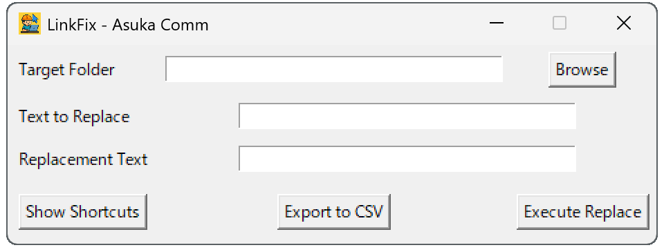

LinkFix v1.1
LinkFixは、ショートカット（.lnk）のリンク先と作業フォルダを一覧表示＆一括置換できる無料ツールです。
ダウンロード
LinkFixをダウンロード（日本語版）
English page here
主な機能
ショートカットのリンク先・作業フォルダの表示と置換
文字列を一括で置換
CSV出力・ログ保存に対応
インストール不要ですぐ使える
画面イメージ

開発支援
気に入ったら、PayPalで支援していただけると嬉しいです：
https://paypal.me/asukanetja